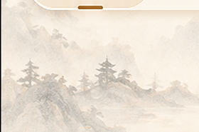

紧急联系人

遇到急事的时候，优活会按下面的顺序，一位一位地联系他们。
主要联系人
其他联系人
这里一位都没有。请家人在优活的家人端里，先把您的家人加进来。
优活现在只记住了称呼，还没有记电话。没有号码就不写出来，免得您按下去拨错了人。
呼叫会被记在办理记录里，家人也看得到。

遇到急事的时候，优活会按下面的顺序，一位一位地联系他们。
这里一位都没有。请家人在优活的家人端里，先把您的家人加进来。
优活现在只记住了称呼，还没有记电话。没有号码就不写出来，免得您按下去拨错了人。
呼叫会被记在办理记录里，家人也看得到。
优活会记下这一次呼叫，并按上面的顺序联系他们。不急的话可以先等等。
电话要家人来填，您不用自己弄：
一、请家人打开优活的家人端。
二、在「家庭成员」里找到自己的名字。
三、把常用号码填进去，这一页就会显示出来。